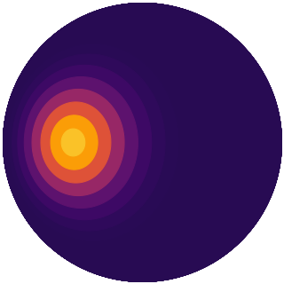

maps.py ¶
A library of surface radiance map functions. These are functions of two
parameters (wavelength in m and zenith angle in radians) and return a radiance.
All functions here are function generators that return radiance map functions
decorated with a numba cfunc() statement so that they
can be pre-compiled and passed to C as pointers. This ensures we get near-C
speed when calling them. Users are encouraged to define their own radiance maps
by following the syntax in the functions below.
from planetplanet.constants import * from numba import cfunc import numpy as np def CustomMap(fwhm = 20, temp = 500): # The function :py:obj:`CustomMap` is a function generator that returns # a surface map. It can have an arbitrary number of args/kwargs, but for # simplicity we allow the user to tune two parameters: the FWHM of the # hotspot in degrees, which for this map we'll assume is a Gaussian in # zenith angle, and the temperature of the hotspot in K. # Note that you can do all sorts of calculations within this function to # define variables that can be accessed by the radiance map below. Let's # compute the standard deviation (in radians) of the Gaussian from the # FWHM: std = (np.pi / 180) * fwhm / 2.35482 # Note that since :py:obj:`func` is a compiled C function, you'll get # nasty errors if you try to access functions/classes/dictionaries or # other fancy Python objects from inside it. Stick to floats and ints # and (maybe) numpy arrays. @cfunc("float64(float64, float64)") def func(lam, z): # Let's compute the radiance of the hotspot from Planck's law. # This will be the amplitude of our Gaussian. a = 2 * HPLANCK * CLIGHT * CLIGHT / (lam * lam * lam * lam * lam) b = HPLANCK * CLIGHT / (lam * KBOLTZ * temp) amp = a / (np.exp(b) - 1.) # Evaluate the Gaussian and return the radiance at the requested # zenith angle. return amp * np.exp(-(z / (2 * std)) ** 2) # This line is important: we need to tell :py:obj:`planetplanet` what # kind of radiance map this is. There are two choices: a radially # symmetric map, whose axis of symmetry is always the center of the # projected disk, and an elliptically symmetric (eyeball) map, whose axis # of symmetry rotates as the planet orbits the star, always pointing # towards the substellar point (or with an offset, if :py:obj:`Lambda` # and :py:obj:`Phi` are set). Let's make this map elliptically symmetric: func.maptype = MAP_ELLIPTICAL_CUSTOM # We return the actual radiance map when this function is called return func
To see what this looks like, run
fig = pl.figure(figsize = (3,3)) DrawEyeball(fig = fig, radiancemap = CustomMap(), theta = np.pi/3, nz = 51) pl.show()
-
planetplanet.photo.maps.LimbDarkenedMap()¶ The default limb-darkened map. This is really a dummy function, since this is already hard-coded in the C engine.
-
planetplanet.photo.maps.RadiativeEquilibriumMap()¶ The default eyeball map. This is really a dummy function, since this is already hard-coded in the C engine.
-
planetplanet.photo.maps.BandedCloudsMap(albedo=0.3, irrad=1361.0, bands=5)¶ A quirky periodic surface map that simulates banded clouds on a gas giant. Not terribly realistic, but showcases what the code can do.
Parameters: - albedo (float) – The body’s albedo. Default 0.3
- irrad (float) – The body’s irradiation. Default is the Solar constant,
SEARTH - bands (int) – The number of bands. Default 5
-
planetplanet.photo.maps.UniformMap(albedo=0.3, irrad=1361.0)¶ A uniform surface radiance map.
Parameters: - albedo (float) – The body’s albedo. Default 0.3
- irrad (float) – The body’s irradiation. Default is the Solar constant,
SEARTH